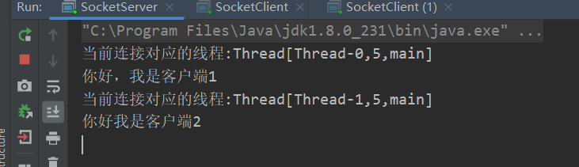

JavaSocket详解
一：socket通信基本原理。
首先socket 通信是基于TCP/IP 网络层上的一种传送方式，我们通常把TCP和UDP称为传输层。
如上图，在七个层级关系中，我们将的socket属于传输层，其中UDP是一种面向无连接的传输层协议。UDP不关心对端是否真正收到了传送过去的数据。如果需要检查对端是否收到分组数据包，或者对端是否连接到网络，则需要在应用程序中实现。UDP常用在分组数据较少或多播、广播通信以及视频通信等多媒体领域。在这里我们不进行详细讨论，这里主要讲解的是基于TCP/IP协议下的socket通信。
socket是基于应用服务与TCP/IP通信之间的一个抽象，他将TCP/IP协议里面复杂的通信逻辑进行分装，对用户来说，只要通过一组简单的API就可以实现网络的连接。借用网络上一组socket通信图给大家进行详细讲解：
首先，服务端初始化ServerSocket，然后对指定的端口进行绑定，接着对端口及进行监听，通过调用accept方法阻塞，此时，如果客户端有一个socket连接到服务端，那么服务端通过监听和accept方法可以与客户端进行连接。
二：socket通信基本示例
在对socket通信基本原理明白后，那我们就写一个最简单的示例，展示童鞋们常遇到的第一个问题：客户端发送消息后，服务端无法收到消息。
服务端：
public class SocketServer {
public static void main(String[] args) {
try {
// 初始化服务端socket并且绑定9999端口
ServerSocket serverSocket = new ServerSocket(9999);
//等待客户端的连接
Socket socket = serverSocket.accept();
//获取输入流
BufferedReader bufferedReader =new BufferedReader(new InputStreamReader(socket.getInputStream()));
//读取一行数据
String str = bufferedReader.readLine();
//输出打印
System.out.println(str);
} catch (IOException e) {
e.printStackTrace();
}
}
}
客户端：
public class SocketClient {
public static void main(String[] args) {
try {
Socket socket =new Socket("127.0.0.1",9999);
BufferedWriter bufferedWriter =new BufferedWriter(new OutputStreamWriter(socket.getOutputStream()));
String str="你好，这是我的第一个socket";
bufferedWriter.write(str);
}catch (IOException e) {
e.printStackTrace();
}
}
}
启动服务端：
发现正常，等待客户端的的连接
启动客户端：
发现客户端启动正常后，马上执行完后关闭。同时服务端控制台报错：
java.net.SocketException: Connection reset上网查异常，查询解决方案，搞了半天都不知道怎么回事。
解决这个问题我们首先要明白，socket通信是阻塞的，他会在以下几个地方进行阻塞。第一个是accept方法，调用这个方法后，服务端一直阻塞在哪里，直到有客户端连接进来。第二个是read方法，调用read方法也会进行阻塞。通过上面的示例我们可以发现，该问题发生在read方法中。有朋友说是Client没有发送成功，其实不是的，我们可以通debug跟踪一下，发现客户端发送了，并且没有问题。而是发生在服务端中，当服务端调用read方法后，他一直阻塞在哪里，因为客户端没有给他一个标识，告诉是否消息发送完成，所以服务端还在一直等待接受客户端的数据，结果客户端此时已经关闭了，就是在服务端报错：java.net.SocketException: Connection reset
那么理解上面的原理后，我们就能明白，客户端发送完消息后，需要给服务端一个标识，告诉服务端，我已经发送完成了，服务端就可以将接受的消息打印出来。
通常会用以下方法进行进行结束：
socket.close()或者调用socket.shutdownOutput(); 方法。调用这俩个方法，都会结束客户端socket。但是有本质的区别。socket.close() 将socket关闭连接，那边如果有服务端给客户端反馈信息，此时客户端是收不到的。而socket.shutdownOutput()是将输出流关闭，此时，如果服务端有信息返回，则客户端是可以正常接受的。现在我们将上面的客户端示例修改一下啊，增加一个标识告诉流已经输出完毕：
public class SocketClient {
public static void main(String[] args) {
try {
Socket socket =new Socket("127.0.0.1",9999);
BufferedWriter bufferedWriter =new BufferedWriter(new OutputStreamWriter(socket.getOutputStream()));
String str="你好，这是我的第一个socket";
bufferedWriter.write(str);
//刷新输入流
bufferedWriter.flush();
//关闭socket的输出流
socket.shutdownOutput();
}catch (IOException e) {
e.printStackTrace();
}
}
}
控制台：
服务端在接受到客户端关闭流的信息后，知道信息输入已经完毕，苏哦有就能正常读取到客户端传过来的数据。通过上面示例，我们可以基本了解socket通信原理，掌握了一些socket通信的基本api和方法，实际应用中，都是通过此处进行实现变通的。
三：while循环连续接受客户端信息：
上面的示例中scoket客户端和服务端固然可以通信，但是客户端每次发送信息后socket就需要关闭，下次如果需要发送信息，需要socket从新启动，这显然是无法适应生产环境的需要。比如在我们是实际应用中QQ，如果每次发送一条信息，就需要重新登陆QQ，我估计这程序不是给人设计的，那么如何让服务可以连续给服务端发送消息？下面我们通过while循环进行简单展示：
Server
public class SocketServer {
public static void main(String[] args) {
try {
// 初始化服务端socket并且绑定9999端口
ServerSocket serverSocket = new ServerSocket(9999);
//等待客户端的连接
Socket socket = serverSocket.accept();//会阻塞
//获取输入流
BufferedReader bufferedReader =new BufferedReader(new InputStreamReader(socket.getInputStream()));
String str;
while ((str = bufferedReader.readLine())!=null){
//输出打印
System.out.println(str);
}
} catch (IOException e) {
e.printStackTrace();
}
}
}
client
public class SocketClient {
public static void main(String[] args) {
try {
Socket socket =new Socket("127.0.0.1",9999);
BufferedWriter bufferedWriter =new BufferedWriter(new OutputStreamWriter(socket.getOutputStream()));
//通过标准输入流从控制台获取字符流
BufferedReader bufferedReader = new BufferedReader(new InputStreamReader(System.in,"UTF-8"));
while (true){
String str = bufferedReader.readLine();
bufferedWriter.write(str);
bufferedWriter.write("\n");
bufferedWriter.flush();
}
} catch (IOException e) {
e.printStackTrace();
}
}
}
大家可以看到，通过一个while 循环，就可以实现客户端不间断的通过标准输入流读取来的消息，发送给服务端。
在这里有个细节， 客户端没有写socket.close()或者调用socket.shutdownOutput();服务端是如何知道客户端已经输入完成了？服务端接受数据的时候是如何判断客户端已经输入完成呢？
这就是一个核心点，双方约定一个标识，当客户端发送一个标识给服务端时，表明客户端端已经完成一个数据的载入。而服务端在结束数据的时候，也通过这个标识进行判断，如果接受到这个标识，表明数据已经传入完成，那么服务端就可以将数据度入后显示出来。
在上面的示例中，客户端端在循环发送数据时候，每发送一行，添加一个换行标识“\n”标识，在告诉服务端我数据已经发送完成了。而服务端在读取客户数据时，通过while ((str = bufferedReader.readLine())!=null)去判断是否读到了流的结尾，负责服务端将会一直阻塞在哪里，等待客户端的输入。
通过while方式，我们可以实现多个客户端和服务端进行聊天。但是，下面敲黑板，划重点。由于socket通信是阻塞式的，假设我现在有A和B俩个客户端同时连接到服务端的上，当客户端A发送信息给服务端后，那么服务端将一直阻塞在A的客户端上，不同的通过while循环从A客户端读取信息，此时如果B给服务端发送信息时，将进入阻塞队列，直到A客户端发送完毕，并且退出后，B才可以和服务端进行通信。简单地说，我们现在实现的功能，虽然可以让客户端不间断的和服务端进行通信，与其说是一对一的功能，因为只有当客户端A关闭后，客户端B才可以真正和服务端进行通信，这显然不是我们想要的。 下面我们通过多线程的方式给大家实现正常人类的思维。
四：多线程下socket编程
服务端：
public class SocketServer {
public static void main(String[] args) throws IOException{
// 初始化服务端socket并且绑定9999端口
ServerSocket serverSocket = new ServerSocket(9999);
while (true) {
//等待客户端的连接
Socket socket = serverSocket.accept();//会阻塞
//每当有一个客户端连接进来后，就启动一个单独的线程进行处理
new Thread(new Runnable() {
@Override
public void run() {
//获取输入流
BufferedReader bufferedReader = null;
try{
bufferedReader =new BufferedReader(new InputStreamReader(socket.getInputStream(),"UTF-8"));
String str;
while ((str = bufferedReader.readLine()) != null){
//输出打印
System.out.println("当前连接对应的线程:"+Thread.currentThread());
System.out.println(str);
}
} catch (IOException e) {
e.printStackTrace();
}
}
}).start();
}
}
}
客户端
public class SocketClient {
public static void main(String[] args) {
try {
Socket socket =new Socket("127.0.0.1",9999);
BufferedWriter bufferedWriter =new BufferedWriter(new OutputStreamWriter(socket.getOutputStream()));
//通过标准输入流从控制台获取字符流
BufferedReader bufferedReader = new BufferedReader(new InputStreamReader(System.in,"UTF-8"));
while (true){
String str = bufferedReader.readLine();
bufferedWriter.write(str);
bufferedWriter.write("\n");
bufferedWriter.flush();
}
} catch (IOException e) {
e.printStackTrace();
}
}
}
通过客户端A控制台输入：
通过客户端B控制台输入：
服务端控制台输出

通过这里我们可以发现，客户端A和客户端B同时连接到服务端后，都可以和服务端进行通信，也不会出现前面讲到使用while（true）时候客户端A连接时客户端B不能与服务端进行交互的情况。在这里我们看到，主要是通过服务端的 new Thread(new Runnable() {}实现的，每一个客户端连接进来后，服务端都会单独起个一线程，与客户端进行数据交互，这样就保证了每个客户端处理的数据是单独的，不会出现相互阻塞的情况，这样就基本是实现了QQ程序的基本聊天原理。
但是实际生产环境中，这种写法对于客户端连接少的的情况下是没有问题，但是如果有大批量的客户端连接进行，那我们服务端估计就要歇菜了。假如有上万个socket连接进来，服务端就是新建这么多进程，反正博主是不敢想，而且socket 的回收机制又不是很及时，这么多线程被new 出来，就发送一句话，然后就没有然后了，导致服务端被大量的无用线程暂用，对性能是非常大的消耗.
在实际生产过程中，我们可以通过线程池技术，保证线程的复用，下面请看改良后的服务端程序。
public class SocketServer {
public static void main(String[] args) throws IOException{
// 初始化服务端socket并且绑定9999端口
ServerSocket serverSocket = new ServerSocket(9999);
//创建一个线程池
ExecutorService executorService = Executors.newFixedThreadPool(100);
while (true) {
//等待客户端的连接
Socket socket = serverSocket.accept();
Runnable runnable = () -> {
BufferedReader bufferedReader = null;
try {
bufferedReader = new BufferedReader(new InputStreamReader(socket.getInputStream(), "UTF-8"));
//读取一行数据
String str;
//通过while循环不断读取信息，
while ((str = bufferedReader.readLine()) != null) {
//输出打印
System.out.println("客户端说：" + str);
}
} catch (IOException e) {
e.printStackTrace();
}
};
executorService.submit(runnable);
}
}
}
就算用了线程池，也得某个server-client的通信结束后这条线程才能空出来进行复用,如果线程池的所有线程跑满了，没有一个通信断开，那么新的请求仍然是无法响应的
通过线程池技术，我们可以实现线程的复用。其实在这里executorService.submit在并发时，如果要求当前执行完毕的线程有返回结果时，这里面有一个大坑，在这里我就不一一详细说明，具体我在我的另一篇文章中《把多线程说个透》里面详细介绍。本章主要讲述socket相关内容。
在实际应用中，socket发送的数据并不是按照一行一行发送的，比如我们常见的报文，那么我们就不能要求每发送一次数据，都在增加一个“\n”标识，这是及其不专业的，在实际应用中，通过是采用数据长度+类型+数据的方式，在我们常接触的热Redis就是采用这种方式，
五：socket 指定长度发送数据
在实际应用中，网络的数据在TCP/IP协议下的socket都是采用数据流的方式进行发送，那么在发送过程中就要求我们将数据流转出字节进行发送，读取的过程中也是采用字节缓存的方式结束。那么问题就来了，在socket通信时候，我们大多数发送的数据都是不定长的，所有接受方也不知道此次数据发送有多长，因此无法精确地创建一个缓冲区（字节数组）用来接收，在不定长通讯中，通常使用的方式时每次默认读取8*1024长度的字节，若输入流中仍有数据，则再次读取，一直到输入流没有数据为止。但是如果发送数据过大时，发送方会对数据进行分包发送，这种情况下或导致接收方判断错误，误以为数据传输完成，因而接收不全。在这种情况下就会引出一些问题，诸如半包，粘包，分包等问题，为了后续一些例子中好理解，我在这里直接将半包，粘包，分包概念性东西在写一下
TCP是个“流协议”，所谓流，就是没有界限的一连串数据，没有界限。TCP底层不了解业务数据的含义，它会根据TCP缓冲区的实际情况进行包的划分，所以业务上认为，一个完整的包可能被TCP拆分为多个包进行发送，也可能把多个小包封装成一个大的数据包进行发送，这就是所谓的TCP粘包和拆包问题。
半包
接受方没有接受到一个完整的包，只接受了部分。
原因：TCP为提高传输效率，将一个包分配的足够大，导致接受方并不能一次接受完。
影响：长连接和短连接中都会出现
粘包
什么是粘包
如果客户端连续不断的向服务端发送数据包时，服务端接收的数据会出现两个数据包粘在一起的情况。
TCP 是基于字节流的，虽然应用层和 TCP 传输层之间的数据交互是大小不等的数据块，但是 TCP 把这些数据块仅仅看成一连串无结构的字节流，没有边界；
从 TCP 的帧结构也可以看出，在 TCP 的首部没有表示数据长度的字段。
基于上面两点，在使用 TCP 传输数据时，才有粘包或者拆包现象发生的可能。一个数据包中包含了发送端发送的两个数据包的信息，这种现象即为粘包。 从接收缓冲区看，后一包数据的头紧接着前一包数据的尾。
接收端收到了两个数据包，但是这两个数据包要么是不完整的，要么就是多出来一块，这种情况即发生了拆包和粘包。拆包和粘包的问题导致接收端在处理的时候会非常困难，因为无法区分一个完整的数据包。
分类：一种是粘在一起的包都是完整的数据包，另一种情况是粘在一起的包有不完整的包
出现原因
出现粘包现象的原因是多方面的:
1)发送方粘包：由TCP协议本身造成的，TCP为提高传输效率，发送方往往要收集到足够多的数据后才发送一包数据。若连续几次发送的数据都很少，通常TCP会根据优化算法把这些数据合成一包后一次发送出去，这样接收方就收到了粘包数据。
2)接收方粘包：接收方用户进程不及时接收数据，从而导致粘包现象。这是因为接收方先把收到的数据放在系统接收缓冲区，用户进程从该缓冲区取数据，若下一包数据到达时前一包数据尚未被用户进程取走，则下一包数据放到系统接收缓冲区时就接到前一包数据之后，而用户进程根据预先设定的缓冲区大小从系统接收缓冲区取数据，这样就一次取到了多包数据。 （放数据的速度 > 应用层拿数据速度）
如何解决
由于底层无法理解上层的业务数据，所以底层是无法保证数据不被拆分和重组的。只能通过设计上层的协议栈来解决，业界的方案可归纳如下：
- 消息定长，例如每个报文固定200字节，如果不够，空位补空格
- 在包尾增加回车换行符进行分割，如FTP协议
- 将消息分为消息头和消息体，消息头中包含消息的长度，字段等信息
- 更复杂的应用层协议
复现
server代码
public class SocketServer {
public static void main(String[] args) {
try {
// 初始化服务端socket并且绑定9999端口
ServerSocket serverSocket = new ServerSocket(9999);
//等待客户端的连接
Socket socket = serverSocket.accept();//会阻塞
try {
int len;
byte[] data = new byte[1024];
InputStream inputStream = socket.getInputStream();
// (3) 按字节流方式读取数据
while ((len = inputStream.read(data)) != -1) {
System.out.println("收到客户端发来的数据:"+new String(data, 0, len));
}
} catch (IOException e) { }
} catch (IOException e) {
e.printStackTrace();
}
}
}
client代码
public class SocketClient {
public static void main(String[] args) {
try {
Socket socket =new Socket("127.0.0.1",9999);
for (int i = 0; i < 1000; i++) {
socket.getOutputStream().write(new String("本小节我们来学习一下 Netty 里面拆包和粘包的概念，并且如何选择适合我们应用程序的拆包器").getBytes());
}
} catch (IOException e) {
e.printStackTrace();
}
}
}
从服务端的控制台输出可以看出，存在三种类型的输出
- 一种是正常的字符串输出。
- 一种是多个字符串“粘”在了一起，我们定义这种 为粘包。
- 一种是一个字符串被“拆”开，形成一个破碎的包，我们定义这种 为半包。
分包(拆包)
在没有 Netty 的情况下，用户如果自己需要拆包，基本原理就是不断从 TCP 缓冲区中读取数据，每次读取完都需要判断是否是一个完整的数据包
- 如果当前读取的数据不足以拼接成一个完整的业务数据包，那就保留该数据，继续从 TCP 缓冲区中读取，直到得到一个完整的数据包。
- 如果当前读到的数据加上已经读取的数据足够拼接成一个数据包，那就将已经读取的数据拼接上本次读取的数据，构成一个完整的业务数据包传递到业务逻辑，多余的数据仍然保留，以便和下次读到的数据尝试拼接。
如果我们自己实现拆包，这个过程将会非常麻烦，我们的每一种自定义协议，都需要自己实现，还需要考虑各种异常 (而 Netty 自带的一些开箱即用的拆包器已经完全满足我们的需求了)
拆包（1）：在出现粘包的时候，我们的接收方要进行拆包处理；
拆包（2）：一个数据包被分成了多次接收；
原因：1. IP分片传输导致的；2.传输过程中丢失部分包导致出现的半包；3.一个包可能被分成了两次传输，在取数据的时候，先取到了一部分（还可能与接收的缓冲区大小有关系）。
影响：粘包和分包在长连接中都会出现
那么如何解决半包和粘包的问题，就涉及一个一个数据发送如何标识结束的问题，通常有以下几种情况
固定长度：每次发送固定长度的数据；
特殊标示：以回车，换行作为特殊标示；获取到指定的标识时，说明包获取完整。(不好,数据本身可能会包含特殊标识)
字节长度：包头+包长+包体的协议形式，当服务器端获取到指定的包长时才说明获取完整；
所以大部分情况下，双方使用socket通讯时都会约定一个定长头放在传输数据的最前端，用以标识数据体的长度，通常定长头有整型int，短整型short，字符串Strinng三种形式。
下面我们通过几个简单的小示例，演示发送接受定长数据，前面我们讲过通过特殊标识的方式，可是有什么我们发送的数据比较大，并且数据本身就会包含我们约定的特殊标识，那么我们在接受数据时，就会出现半包的情况，通过这种情况下，我们都是才有包头+包长+包体的协议模式，每次发送数据的时候，我们都会固定前4个字节为数据长度，那到数据长度后，我们就可以非常精确的创建一个数据缓存区用来接收数据。
那么下面就先通过包类型+包长度+消息内容定义一个socket通信对象，数据类型为byte类型，包长度为int类型，消息内容为byte类型。
首先我们创建服务端socket。
public static void main(String[] args) throws IOException {
try {
ServerSocket serverSocket =new ServerSocket(9999);
Socket client = serverSocket.accept();
InputStream inputStream = client.getInputStream();
DataInputStream dataInputStream =new DataInputStream(inputStream);
while (true){
byte b = dataInputStream.readByte();//读取1位
int len = dataInputStream.readInt();
byte[] data =new byte[len -5];
dataInputStream.readFully(data);//读取4位
String str =new String(data);
System.out.println("获取的数据类型为："+b);
System.out.println("获取的数据长度为："+len);
System.out.println("获取的数据内容为："+str);
}
} catch (IOException e) { e.printStackTrace();}
}
在服务端创建后，我们通过DataInputStream 数据流进行数据获取，首先我们获取数据的类型，然后在获取数据的长度，因为数据实际有效长度是整个数据的长度减去5，（包括第1个字节为数据类型，第2到5个字节为数据长度）。然后根据数据的实际有效长度创建数据缓存区，用户存放数据，这边确保每次接接受数据的完整性，不会出现半包与粘包的情况。在数据读取的时候，我们通过readFully（）方法读取数据。下面我们来创建socket的客户端：
public static void main(String[] args) {
try {
Socket socket =new Socket("127.0.0.1",9999);
OutputStream outputStream = socket.getOutputStream();
DataOutputStream dataOutputStream =new DataOutputStream(outputStream);
Scanner scanner =new Scanner(System.in);
if(scanner.hasNext()){
String str = scanner.next();
int type =1;
byte[] data = str.getBytes();
int len = data.length +5;
dataOutputStream.writeByte(type);//类型
dataOutputStream.writeInt(len);//长度
dataOutputStream.write(data);//数据
dataOutputStream.flush();
}
}catch (IOException e) { e.printStackTrace(); }
}
客户端socket创建后，我们通过dataOutputStream输出流中的writeByte（）方法，设置数据类型，writeInt（）方法设置数据长度，然后通过write（）方法将数据发送到服务端进行通信，发送完毕后，为了确保数据完全发送，通过调用flush()方法刷新缓冲区。
下面我们通过控制可以看到服务端接受数据的情况：
上面服务端分别接受到数据的类型，长度和详细内容，具体下面的错误异常是由于客户端发送一次后关闭，服务端任在接受数据，就会出现连接重置的错误，这是一个简单的通过数据类型+数据长度+数据内容的方法发送数据的一个小例子，让大家了解socket通信数据发送的原理，在实际应用中，原理不出其左右，只是在业务逻辑上完善而已。
六：socket 建立长连接
在了解socket长连接和短连接之前，我们先通过一个概念性的东西，理解一下什么叫长连接，什么叫短连接，长连接的原理和短连接的原理，
6.1 长连接
指在一个连接上可以连续发送多个数据包(包(Packet)是TCP/IP协议通信传输中的数据单位，一般也称“数据包”。)，在连接保持期间，如果没有数据包发送，需要双方发链路检测包。整个通讯过程，客户端和服务端只用一个Socket对象，长期保持Socket的连接。
6.2 短连接
短连接服务是每次请求都建立链接，交互完之后关闭链接，
6.3 长连接与短连接的优势
长连接多用于操作频繁，点对点的通讯，而且连接数不能太多情况。每个TCP连接都需要三步握手，这需要时间，如果每个操作都是短连接，再操作的话那么处理速度会降低很多，所以每个操作完后都不断开，下次处理时直接发送数据包就OK了，不用建立TCP连接。例如：数据库的连接用长连接，如果用短连接频繁的通信会造成socket错误，而且频繁的socket 创建也是对资源的浪费。
而像WEB网站的http服务一般都用短链接，因为长连接对于服务端来说会耗费一定的资源，而像WEB网站这么频繁的成千上万甚至上亿客户端的连接用短连接会更省一些资源，如果用长连接，而且同时有成千上万的用户，如果每个用户都占用一个连接的话，那可想而知吧。所以并发量大，但每个用户无需频繁操作情况下需用短连好。
在这章之前，你看到所有的例子，都是短连接，每次连接完毕后，都是自动断开，如果需要重新连接，则需要建立新的连接对象，比如像前一章我们看到的例子中，服务端有connection reset错误，就是短连接的一种。接下来，我们主要讲解一下长连接原理，在实际应用中，长连接他并不是真正意义上的长连接，（他不像我们打电话一样，电话通了之后一直不挂的这种连接）。他们是通过一种称之为心跳包或者叫做链路检测包，去定时检查socket 是否关闭，输入/输出流是否关闭。
在这里有个问题，也是好多初学者比较困惑的，也是好多初学socket时候，遇到的一个问题，那就是socket是通过流的方式通信的，既然关闭流，就是关闭socket，那么长连接不是很简单吗？就是我们读取流中的信息后，不关闭流，等下次使用时，直接往流中扔数据不就行了？
针对这个问题，我做个详细的解答，尽可能的描述清楚，首先我们socket是针对应用层与TCP/IP数据传输协议封装的一套方案，那么他的底层也是通过TCP/IP或则UDP通信的，所以说socket本身并不是一直通信协议，而是一套接口的封装。而TCP/IP协议组里面的应用层包括FTP、HTTP、TELNET、SMTP、DNS等协议，我们知道，http1.0是短连接，http1.1是长连接，我们在打开http通信协议里面在Response headers中可以看到这么一句Connection:keep-alive。他是干什么的，他就是表示长连接，但是他并不是一直保持的连接，他有一个时间段，如果我们想一直保持这个连接怎么办？那就是在指定的时间内让客户端和服务端进行一个请求，请求可以是服务端发起，也可以是客户端发起，通常我们是在客户端不定时的发送一个字节数据给服务端，这个就是我们称之为心跳包，想想心跳是怎么跳动的，是不是为了检测人活着，心会定时的跳动，就是这个原理。
参考： https://www.jianshu.com/p/cde27461c226
This blog is under a CC BY-NC-SA 3.0 Unported License
本文链接：http://hogwartsrico.github.io/2020/06/29/Java-Socket/